This is not a clinical diagnostic tool and does not establish clinical validity.
Grouping uses SHA256 of the grayscale decoded pixel array (including its shape and dtype); file-byte SHA256 is stored separately. The inventory covers 1886 physical source files for 1269 usable labeled images. It found 617 exact duplicate source-file clusters containing 1234 files (1269 unique pixel-content groups total). These copies map to 617 labeled observations, each used once by the loader; 0 pixel groups contain multiple modeling observations. 0 duplicate groups crossed folds under the previous stratified image-level CV. 0 groups crossed the official train/validation boundary.
The corrected method is duplicate-grouped image-level cross-validation using StratifiedGroupKFold. It leaves 0 duplicate groups crossing validation folds. Patient IDs are unavailable; no patient grouping is claimed.
Duplicate-safe splitting produced similar results, suggesting exact duplicate leakage was not a major driver of performance. The average non-dummy macro-F1 change was +0.007 (similarity threshold: ±0.02).
| Model | Original accuracy | Grouped accuracy | Original macro F1 | Grouped macro F1 | Original balanced acc. | Grouped balanced acc. | Original OVR AUC | Grouped OVR AUC | Original train acc. / gap | Grouped train acc. / gap |
|---|---|---|---|---|---|---|---|---|---|---|
| Dummy | 0.263 ± 0.003 | 0.263 ± 0.003 | 0.052 ± 0.000 | 0.052 ± 0.001 | 0.125 ± 0.000 | 0.125 ± 0.000 | 0.500 ± 0.000 | 0.500 ± 0.000 | 0.263 / 0.000 | 0.263 / -0.000 |
| Logistic Regression | 0.478 ± 0.047 | 0.480 ± 0.041 | 0.367 ± 0.050 | 0.364 ± 0.045 | 0.396 ± 0.050 | 0.395 ± 0.050 | 0.778 ± 0.024 | 0.786 ± 0.017 | 0.504 / 0.027 | 0.505 / 0.025 |
| Random Forest | 0.549 ± 0.053 | 0.552 ± 0.024 | 0.394 ± 0.078 | 0.402 ± 0.019 | 0.388 ± 0.067 | 0.397 ± 0.017 | 0.801 ± 0.023 | 0.812 ± 0.023 | 0.976 / 0.427 | 0.977 / 0.424 |
| XGBoost | 0.535 ± 0.033 | 0.537 ± 0.018 | 0.314 ± 0.044 | 0.330 ± 0.045 | 0.322 ± 0.033 | 0.334 ± 0.031 | 0.804 ± 0.022 | 0.806 ± 0.028 | 0.787 / 0.252 | 0.794 / 0.256 |
Official validation cleaning: 402 images originally; 0 removed because their pixel group also occurs in training; 402 remain. Class distribution before: chocolate cyst: 110; serous cystadenoma: 66; teratoma: 108; theca cell tumor: 31; simple cyst: 19; normal ovary: 20; mucinous cystadenoma: 33; high-grade serous carcinoma: 15. After: chocolate cyst: 110; serous cystadenoma: 66; teratoma: 108; theca cell tumor: 31; simple cyst: 19; normal ovary: 20; mucinous cystadenoma: 33; high-grade serous carcinoma: 15.
| Model | Original official accuracy | Duplicate-clean accuracy | Original macro F1 | Duplicate-clean macro F1 | Original balanced accuracy | Duplicate-clean balanced accuracy | Original OVR AUC | Duplicate-clean OVR AUC |
|---|---|---|---|---|---|---|---|---|
| Dummy | 0.269 | 0.269 | 0.053 | 0.053 | 0.125 | 0.125 | 0.500 | 0.500 |
| Logistic Regression | 0.480 | 0.480 | 0.366 | 0.366 | 0.395 | 0.395 | 0.802 | 0.802 |
| Random Forest | 0.540 | 0.540 | 0.374 | 0.374 | 0.376 | 0.376 | 0.832 | 0.832 |
| XGBoost | 0.560 | 0.560 | 0.333 | 0.333 | 0.339 | 0.339 | 0.833 | 0.833 |
Can a conservative set of radiomic measurements from annotated regions distinguish the official MMOTU image categories in a small, leakage-aware research experiment?
MMOTU OTU_2d: 1469 labeled rows; 1269 rows usable for modeling; 200 rows excluded for missing or invalid files and duplicate filenames. Class distribution: chocolate cyst: 336; serous cystadenoma: 219; teratoma: 336; theca cell tumor: 88; simple cyst: 66; normal ovary: 267; mucinous cystadenoma: 104; high-grade serous carcinoma: 53. Images found: 1469; masks found: 1269; missing image labels: 0; missing masks: 200; empty masks: 0; dimension/read errors: 0; duplicate label filenames: 0; image names with differing file contents: 0; identical image copies across sources: 617.
Data access note:
Patient grouping available: False. The official class lists identify images by filename; no reliable patient identifier was supplied.
Five-fold duplicate-grouped image-level cross-validation on the official training partition is the primary estimate. The original stratified image-level CV is retained as a comparator. The official validation partition is held out; exact pixel duplicates that also occur in training are removed for the duplicate-clean estimate. No patient-level independence can be claimed because no reliable patient IDs are available. Random seed: 42.
PyRadiomics firstorder + GLCM + GLRLM + 2D shape. 67 feature columns. Physical pixel spacing is unavailable, so shape quantities are in pixels and have no physical interpretation.
Dummy prior baseline, logistic regression, random forest, and XGBoost where available. Imputation, variance filtering, scaling, and mutual-information feature selection are fitted inside each fold's training pipeline. A mean accuracy gap of at least 0.15 is flagged for review.
| Model | CV accuracy | Macro F1 | Balanced accuracy | Train accuracy | Mean train–validation accuracy gap |
|---|---|---|---|---|---|
| Dummy | 0.263 ± 0.003 | 0.052 ± 0.001 | 0.125 ± 0.000 | 0.263 | -0.000 (No large mean gap flagged) |
| Logistic Regression | 0.480 ± 0.041 | 0.364 ± 0.045 | 0.395 ± 0.050 | 0.505 | 0.025 (No large mean gap flagged) |
| Random Forest | 0.552 ± 0.024 | 0.402 ± 0.019 | 0.397 ± 0.017 | 0.977 | 0.424 (Review) |
| XGBoost | 0.537 ± 0.018 | 0.330 ± 0.045 | 0.334 ± 0.031 | 0.794 | 0.256 (Review) |
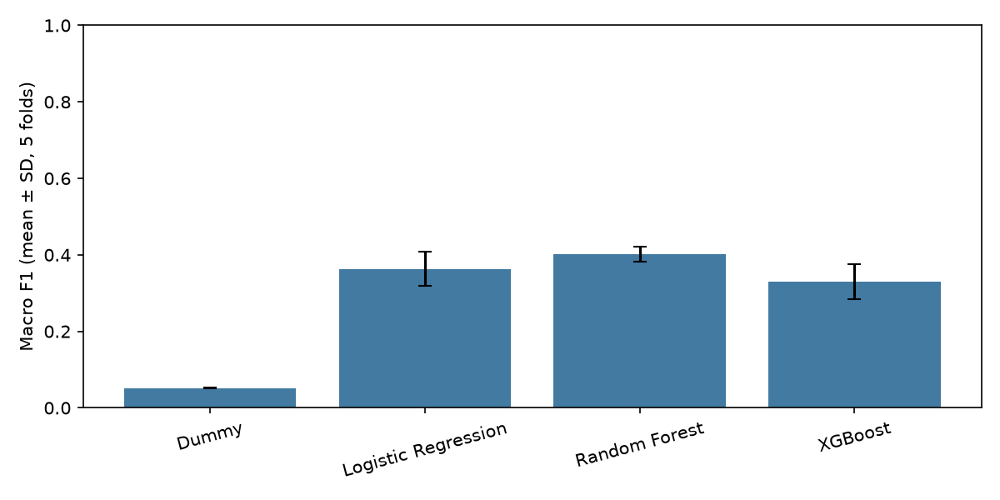
Accuracy 0.269; macro F1 0.053; balanced accuracy 0.125; macro OVR AUC 0.5; multiclass Brier score 0.808; log loss 1.826. Per-class recall: chocolate cyst: 0.00; serous cystadenoma: 0.00; teratoma: 1.00; theca cell tumor: 0.00; simple cyst: 0.00; normal ovary: 0.00; mucinous cystadenoma: 0.00; high-grade serous carcinoma: 0.00.
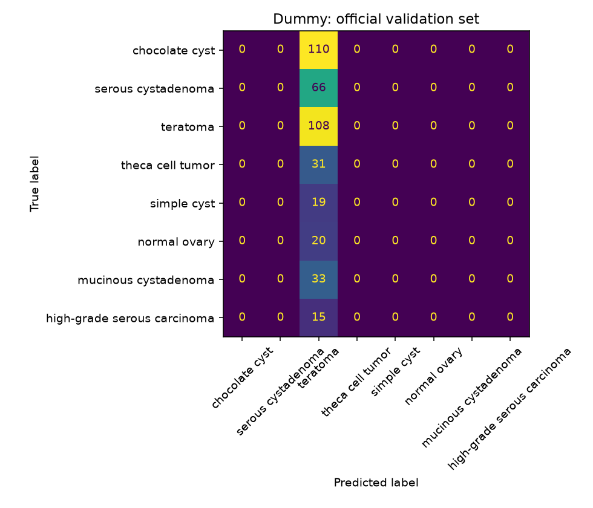
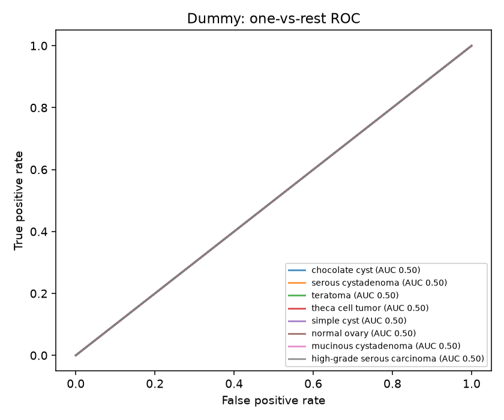
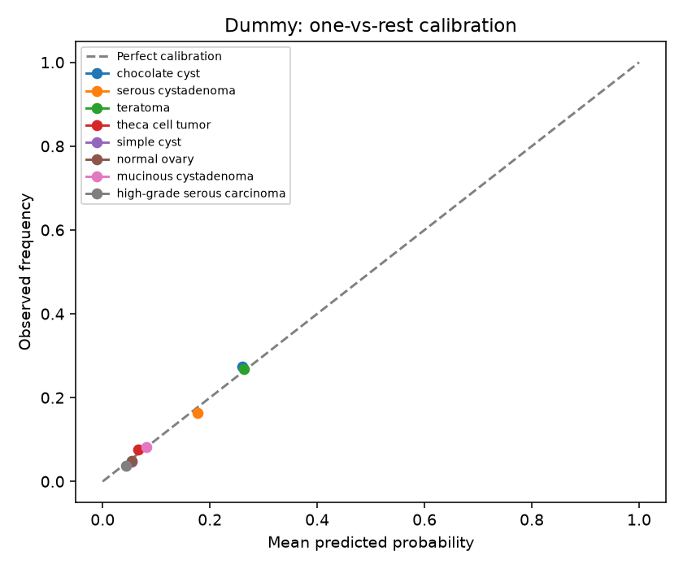
Accuracy 0.480; macro F1 0.366; balanced accuracy 0.395; macro OVR AUC 0.8024775682650714; multiclass Brier score 0.686; log loss 1.566. Per-class recall: chocolate cyst: 0.54; serous cystadenoma: 0.58; teratoma: 0.61; theca cell tumor: 0.19; simple cyst: 0.32; normal ovary: 0.50; mucinous cystadenoma: 0.09; high-grade serous carcinoma: 0.33.
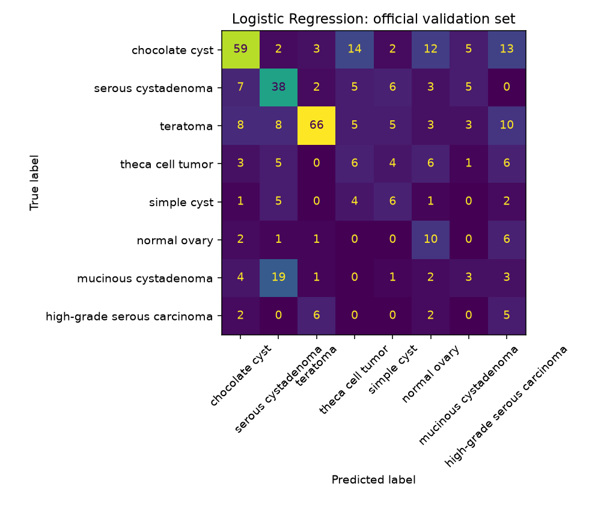
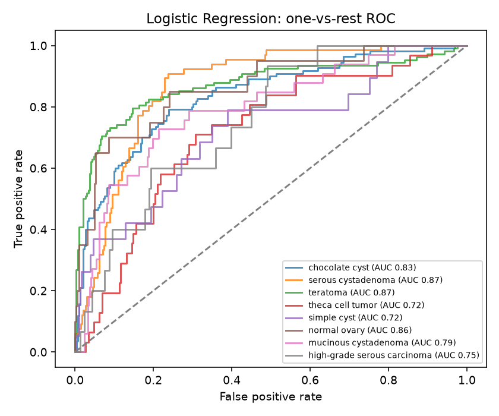
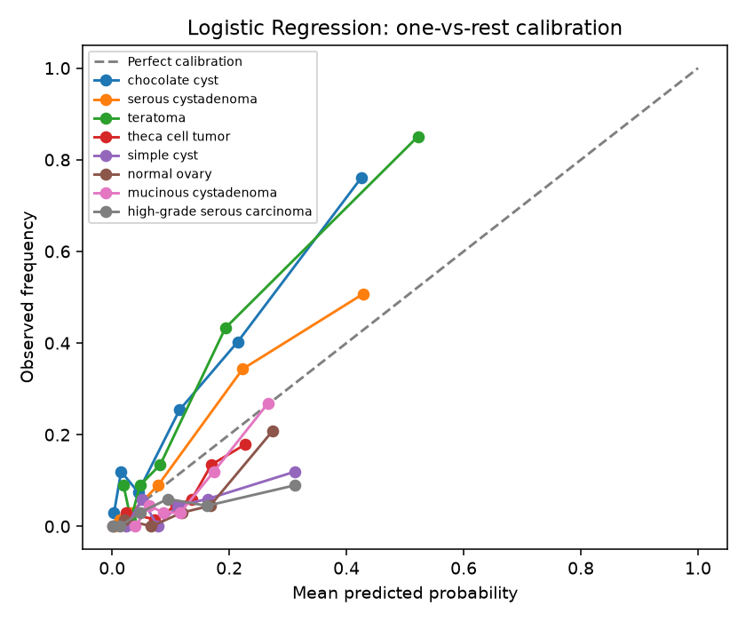
Accuracy 0.540; macro F1 0.374; balanced accuracy 0.376; macro OVR AUC 0.8318816425781672; multiclass Brier score 0.584; log loss 1.387. Per-class recall: chocolate cyst: 0.63; serous cystadenoma: 0.67; teratoma: 0.74; theca cell tumor: 0.35; simple cyst: 0.21; normal ovary: 0.15; mucinous cystadenoma: 0.12; high-grade serous carcinoma: 0.13.
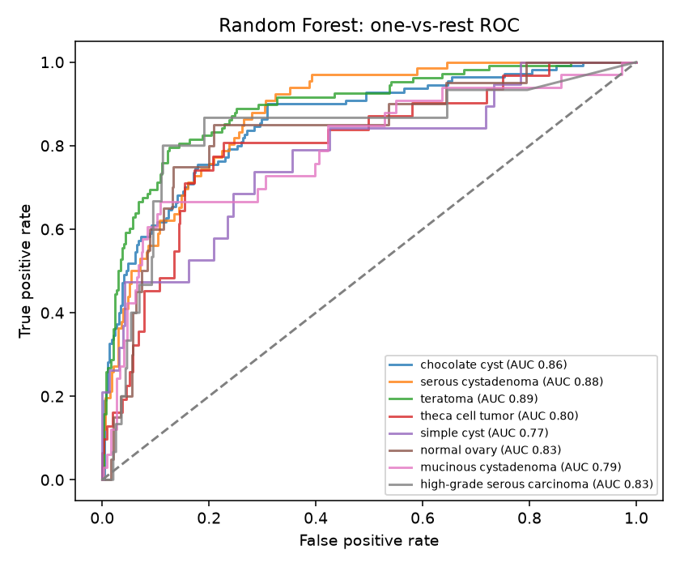
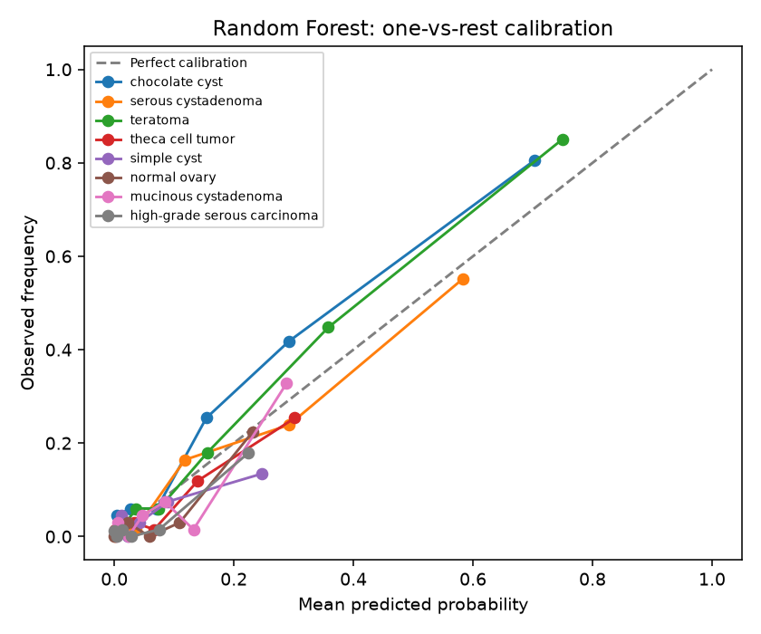
Accuracy 0.560; macro F1 0.333; balanced accuracy 0.339; macro OVR AUC 0.833213181205416; multiclass Brier score 0.582; log loss 1.281. Per-class recall: chocolate cyst: 0.76; serous cystadenoma: 0.68; teratoma: 0.80; theca cell tumor: 0.10; simple cyst: 0.16; normal ovary: 0.05; mucinous cystadenoma: 0.03; high-grade serous carcinoma: 0.13.
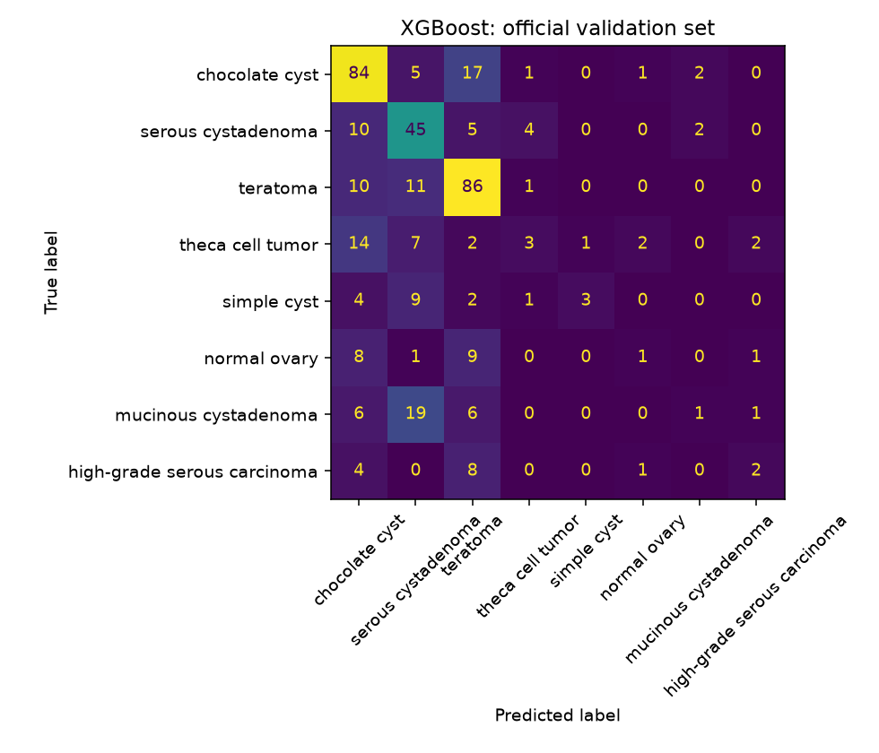
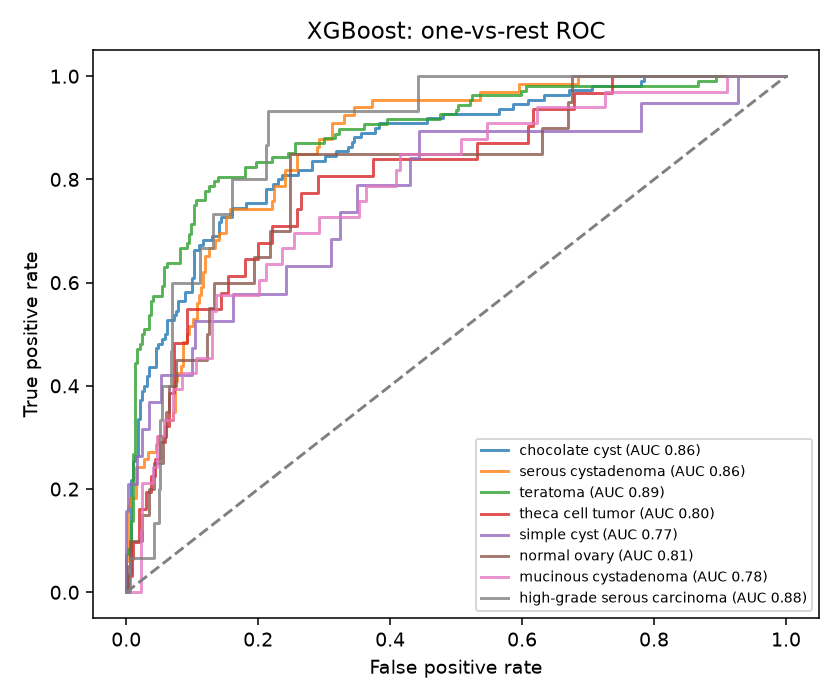
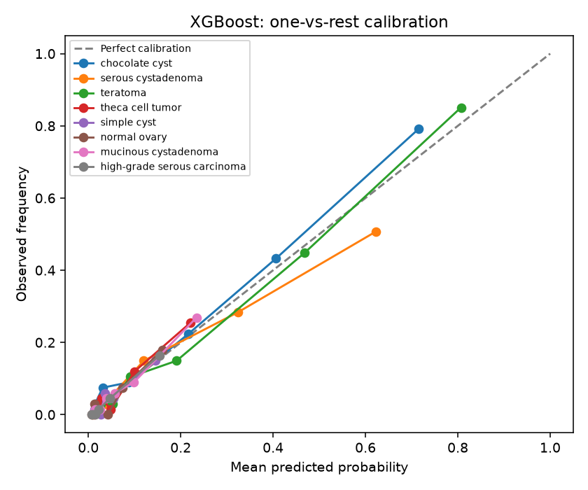
Image-level splits can place images from the same person in different folds. The public labels do not supply usable patient identifiers. Results are from one source and one acquisition setting, and can be optimistic due to shared patient/image acquisition characteristics. Radiomic features may be affected by image display, compression, and annotation choices. These results do not prove clinical validity, diagnostic utility, external generalization, or patient-level performance.
Full machine-readable audit, metrics, and feature settings are saved alongside this report.